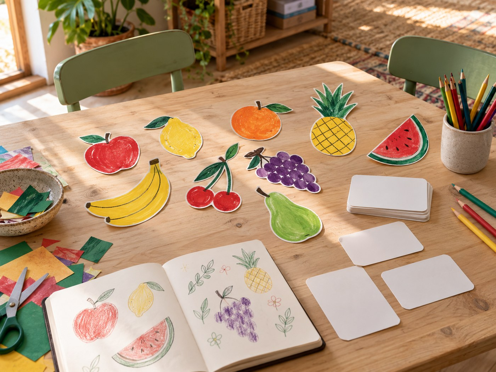

Ein neuer Satz.
Eine neue Welt.
Spanisch und Englisch für neugierige Menschen. Entdecke hier, wie persönlicher Unterricht und ein einfacher Kursfinder zusammenpassen können.
Finde deinen SprachkursSo, wie du bist.
So lernst du.
Du bringst deine Ziele mit. Wir finden den Unterricht, der zu dir und deinem Alltag passt.
Beispielangebote zur Demonstration. Es gibt keine echten Kurse, Preise oder buchbaren Termine.
Eine Sprache lebt
nicht im Lehrbuch.
Ein Gespräch beim Kaffee, eine kleine Geschichte, ein Gedanke, den du endlich ausdrücken kannst. Luma verbindet alltagsnahe Übungen mit Raum zum Ausprobieren.
Lern uns kennen¿Tomamos un café?
Trinken wir einen Kaffee?Let’s talk about it.
Lass uns darüber sprechen.Kleine Sätze. Der Anfang von etwas Großem.
Lernen darf sich nach Spaß anfühlen.
Raus aus der Routine.
Rein ins Erleben.
Geschichten, Bücher und neue Perspektiven: Unsere Workshops bringen Sprache und gemeinsame Erlebnisse zusammen.
Geschichten für Kinder
Storytelling auf Englisch und Cuentacuentos auf Spanisch: Wir lesen eine Geschichte und verbinden sie mit einer interaktiven Aufgabe.
Reading Club & Club de Lectura
Ein Buch lesen und gemeinsam darüber sprechen – auf Englisch oder Spanisch. Frag uns nach der aktuellen Lektüre und den nächsten Terminen.
Grammatik trifft Konversation
Ein Thema verstehen und direkt im Gespräch ausprobieren. Diese Workshops verbinden Grammatik mit mündlicher Anwendung.
¡Hola, ich bin Mara!
Mara ist die fiktive Gastgeberin von Luma. Sie steht für die Idee hinter diesem Studio-Konzept: entspannt anfangen, neugierig bleiben und die Sprache Schritt für Schritt im Alltag entdecken.
Das Porträt und die Unterrichtsszene wurden mit KI erzeugt. Luma und das vorgestellte Team sind erfunden.
Mara SolísFiktive Studio-Gastgeberin
Ein kleines Hallo.
Ein guter Anfang.
Probiere die Kursanfrage aus. Deine Eingabe bleibt in diesem Browser und wird an niemanden gesendet.
hallo@luma.exampleKeine echte KontaktadresseFiktives Studio · KasselMehr über diese DemoEin Studio in deiner Stadt.
Beispielstadt auf Google Maps ansehenKassel als Beispielstadt · kein tatsächlicher Studiostandort